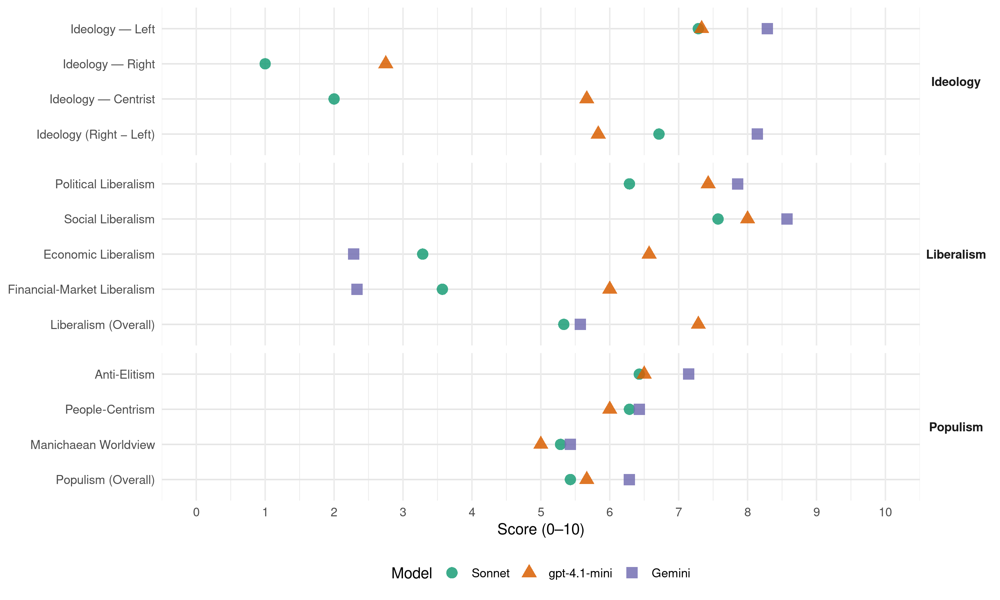

FA (Costa Rica, 2018)
manifesto_id 153322_201802
Get full text: This site shows derived annotations and short verbatim quotes only. The full manifesto text is © Manifesto Project / WZB — obtain it via manifesto-project.wzb.eu using the manifesto_id above.
Headline scores
| Dimension | Sonnet | gpt-4.1-mini | Gemini |
|---|---|---|---|
| Populism (Overall) | 5.4 | 5.7 | 6.3 |
| Anti-Elitism | 6.4 | 6.5 | 7.1 |
| People-Centrism | 6.3 | 6.0 | 6.4 |
| Manichaean Worldview | 5.3 | 5.0 | 5.4 |
| Ideology (Right − Left) | 6.7 | 5.8 | 8.1 |
| Liberalism (Overall) | 5.3 | 7.3 | 5.6 |
| Political Liberalism | 6.3 | 7.4 | 7.9 |
| Social Liberalism | 7.6 | 8.0 | 8.6 |
| Economic Liberalism | 3.3 | 6.6 | 2.3 |
| Financial-Market Liberalism | 3.6 | 6.0 | 2.3 |
Evidence per dimension
Economic Liberalism
Gemini · score 3.0 · verified · chunk 1
“políticas neoliberales impulsadas por el PLN”
tomó el rumbo opuesto de la mano de las políticas neoliberales impulsadas por el PLN, el PUSC y el ML desde los años 80’s
Gemini · score 2.0 · verified · chunk 2
“fijación de precios mínimos”
pequeña producción y la fijación de precios mínimos a las personas productoras
Gemini · score 2.0 · verified · chunk 3
“combatir las prácticas monopólicas”
A través de la Comisión para Promover la Competencia, combatir las prácticas monopólicas que encarecen
Gemini · score 2.0 · verified · chunk 4
“regular las tarifas de universidades privadas”
proyectos como “Fotocopiando para estudiar (17.342) el de la regulación de las tarifas de universidades privadas (18.011) y el fortalecimiento de CONAPE
Gemini · score 2.0 · verified · chunk 5
“derogar la Ley de Concesión de Obra”
Impulsar un proyecto para derogar la Ley de Concesión de Obra Pública y sustituirla por esquemas de contratación
Gemini · score 3.0 · verified · chunk 6
“exoneración de impuestos para la compra”
regula la exoneración de impuestos para la compra de vehículos para personas con discapacidad
Gemini · score 2.0 · verified · chunk 7
“suspenderemos las negociaciones del Tratado Transpacífico”
14. Suspenderemos las negociaciones del Tratado Transpacífico y otros tratados de libre comercio
gpt-4.1-mini · score 6.0 · verified · chunk 1
“promover un enfoque de atención a las familias de condición de pobreza”
a) Los programas dirigidos a la generación de empleo y el desarrollo de nuevas actividades productivas. Es indispensable promover un enfoque de atención a las familias de condición de pobreza, en el cual la atención de necesidades básicas esté acompañada de alternativas de generación de empleo y reinserción en el sistema educativo (ver capítulos sobre empleo y educación).
gpt-4.1-mini · score 7.0 · verified · chunk 2
“reactivar la producción nacional”
Medidas fiscales para la reactivar la producción nacional. Además, y aunque se trate de medidas de limitado impacto sobre el déficit, también es necesario emprender iniciativas del lado del gasto público.
gpt-4.1-mini · score 7.0 · verified · chunk 3
“promover la reforma a la Ley del Sistema Financiero Nacional para la Vivienda”
Promover una reforma a la Ley del Sistema Financiero Nacional para la Vivienda (SFNV) para facilitar que las instituciones públicas que adjudiquen terrenos aptos para vivienda en procesos de cobro judicial puedan traspasarlos directamente a las instituciones del sistema
gpt-4.1-mini · score 6.0 · verified · chunk 4
“la inversión estatal en ciencia y tecnología debe ser beneficiosa para todas”
Desde esta perspectiva, la investigación científica y el desarrollo tecnológico deben dirigirse a mejorar el bienestar y la calidad de vida de todas y todos. Es decir, que se debe garantizar el acceso de toda la población a los conocimientos generados y a los productos y servicios derivados de la ciencia y la tecnología.
gpt-4.1-mini · score 7.0 · verified · chunk 5
“promover acceso al crédito, autonomía y empoderamiento económico”
Fortalecer los programas específicos a cargo del INAMU y la banca pública para promover acceso al crédito, autonomía y empoderamiento económico, dirigidos a mujeres de todas las condiciones, pero especialmente aquellas que sufren condiciones de exclusión y vulnerabilidad social, a fin de que puedan desarrollarse y alcanzar autonomía económica.
gpt-4.1-mini · score 7.0 · verified · chunk 6
“promover el desarrollo de una industria nacional dentro del marco de la economía social solidaria”
Gestionar un marco normativo que permita consolidar la producción cultural nacional y la diversidad cultural del país, por medio de asegurar un trato preferencial por su carácter de interés nacional, para efectos de trámites y permisos administrativos. Promover el desarrollo de una industria nacional dentro del marco de la economía social solidaria, brindando apoyo material, financiero, para el desarrollo de la producción nacional.
gpt-4.1-mini · score 6.0 · verified · chunk 7
“aumento en la tarifa del impuesto de valor agregado sobre productos culturales”
…se propone incluir dentro de las reformas al sistema tributario, una propuesta para aumentar en un 2% la tarifa del impuesto de valor agregado sobre productos culturales puramente comerciales… a fin de asignar los recursos recaudados con destino específico para fortalecer el desarrollo de la producción artística y cultural nacional.
Sonnet · score 3.0 · verified · chunk 1
“políticas neoliberales impulsadas por el PLN, el PUSC y el ML”
tomó el rumbo opuesto de la mano de las políticas neoliberales impulsadas por el PLN, el PUSC y el ML desde los años 80’s
Sonnet · score 2.0 · verified · chunk 2
“tratados comerciales de”burro amarrado contra tigre suelto”“
del abandono de la agricultura alimentaria para destinar los escasos recursos disponibles al sector exportador y de la firma de tratados comerciales de “burro amarrado contra tigre suelto”
Sonnet · score 3.0 · verified · chunk 3
“Rechazar cualquier iniciativa o proyecto de ley dirigido a la privatización”
4. Rechazar cualquier iniciativa o proyecto de ley dirigido a la privatización de la generación eléctrica.
Sonnet · score 4.0 · verified · chunk 4
“recargo al impuesto sobre ganancias de las grandes empresas”
un recargo al impuesto sobre ganancias de las grandes empresas dedicadas al negocio de la salud privada (incremento al 35%
Sonnet · score 4.0 · verified · chunk 5
“modelo de concesiones que traslada todo el riesgo al Estado”
se apostó a un modelo de concesiones que traslada todo el riesgo al Estado, encarece excesivamente los proyectos y fomenta la corrupción
Sonnet · score 4.0 · verified · chunk 6
“incentivos para empresas que den puestos de trabajo”
el desarrollo de programas de incentivos para empresas que den puestos de trabajo a personas con discapacidad
Sonnet · score 3.0 · verified · chunk 7
“Suspenderemos las negociaciones del Tratado Transpacífico”
Suspenderemos las negociaciones del Tratado Transpacífico y otros tratados de libre comercio (TLC) orientados a profundizar el modelo de apertura desigual
Financial-Market Liberalism
Gemini · score 2.0 · verified · chunk 1
“fijar un límite superior del 15% sobre depósitos”
Estudiar la conveniencia de fijar un límite superior del 15% sobre depósitos y captaciones de las instituciones financieras
Gemini · score 2.0 · verified · chunk 2
“transacciones financieras del capital golondrina”
extraordinarias de las entidades financieras con altos rendimientos g) Gravar las transacciones financieras del capital golondrina h) Gravar la
Gemini · score 2.0 · verified · chunk 3
“reformas al Sistema Financiero Nacional para la Vivienda”
están las reformas al Sistema Financiero Nacional para la Vivienda (SNFV), al abordaje de la
Gemini · score 2.0 · verified · chunk 4
“bancos del Estado”
descentralizar la prestación de sus servicios hacia todo el territorio nacional a través de una alianza con los bancos del Estado; mejorar las condiciones de crédito
Gemini · score 3.0 · verified · chunk 5
“banca pública para promover acceso al crédito”
programas específicos a cargo del INAMU y la banca pública para promover acceso al crédito, autonomía y empoderamiento
Gemini · score 3.0 · verified · chunk 6
“Banca de desarrollo para la juventud”
Banca de desarrollo para la juventud Establecer un monto sobre los rendimientos generados
gpt-4.1-mini · score 6.0 · verified · chunk 1
“la banca promueve el endeudamiento de las familias mediante un fuerte incremento del crédito para consumo y vivienda”
la banca promueve el endeudamiento de las familias mediante un fuerte incremento del crédito para consumo y vivienda (a menudo concedido en dólares a personas cuyos ingresos son en colones, lo cual introduce un importante de riesgo e inestabilidad potencial), mientras limita el crédito para la producción el cual se coloca a tasas de interés excesivamente elevadas.
gpt-4.1-mini · score 7.0 · verified · chunk 2
“lucha contra el fraude fiscal, la evasión y elusión”
Reformas legales necesarias para fortalecer las herramientas de lucha contra el fraude fiscal, la evasión y elusión; Medidas fiscales para la reactivar la producción nacional.
gpt-4.1-mini · score 6.0 · verified · chunk 3
“modificación en la integración de dicho Consejo”
Eliminar la intromisión politiquera en la administración del ICE, mediante la sustitución de la presidencia ejecutiva por una gerencia general, dependiente del Consejo Directivo y la modificación en la integración de dicho Consejo para que la mayoría de sus integrantes se elijan a partir de ternas
gpt-4.1-mini · score 5.0 · verified · chunk 4
“la protección del conocimiento con fines de explotación comercial lucrativa es contraria”
Deben excluirse de esta política aquellos conocimientos y tecnologías derivados de la investigación científica nacional financiada total o parcialmente con fondos públicos, que por su potencial de explotación económica en mercados muy específicos, no deben ser publicados sino hasta que esos conocimientos y tecnologías hayan sido debidamente protegidos y se asegure plenamente la exclusividad de esos negocios para el país. La protección del conocimiento con fines de explotación comercial lucrativa es contraria a la ideología del Frente Amplio.
Sonnet · score 3.0 · verified · chunk 1
“límites a las tasas de interés”
se generarán límites a las tasas de interés utilizando como referencia la tasa de interés efectiva del mercado fijada por el Sistema Financiero Nacional
Sonnet · score 2.0 · verified · chunk 2
“Gravar las transacciones financieras del capital golondrina”
d) Establecer un impuesto a la expatriación de grandes capitales … g) Gravar las transacciones financieras del capital golondrina
Sonnet · score 4.0 · verified · chunk 3
“nuevos instrumentos financieros que faciliten a más familias”
Promover la creación de nuevos instrumentos financieros que faciliten a más familias el acceso a opciones de vivienda, tales como: el leasing habitacional o préstamos a tasa básica
Sonnet · score 4.0 · verified · chunk 4
“impuesto sobre ganancias de capital”
o un incremento al 20% del impuesto sobre ganancias de capital, donde un porcentaje se destinaría al financiamiento del aporte estatal a la Caja
Sonnet · score 5.0 · verified · chunk 5
“legitimación de capitales”
Investigación y control de la legitimación de capitales, como la estrategia prioritaria para enfrentar la penetración del crimen organización internacional
Sonnet · score 4.0 · verified · chunk 6
“créditos en condiciones preferenciales dirigidos hacia”
Establecer un monto sobre los rendimientos generados por los bancos para dedicarlo a créditos en condiciones preferenciales dirigidos hacia el desarrollo de micro y pequeñas empresas
Sonnet · score 3.0 · verified · chunk 7
“arbitrajes internacionales de carácter privado”
tratados bilaterales de inversiones que pretendan obligar a Costa Rica a someterse a arbitrajes internacionales de carácter privado
Political Liberalism
Gemini · score 8.0 · verified · chunk 1
“democracia bastante estable y relativamente funcional”
En cuanto a la dimensión política, a pesar de seguir con una democracia bastante estable y relativamente funcional en sus procedimientos
Gemini · score 8.0 · verified · chunk 2
“derechos civiles, políticos, sociales”
para que el Estado pueda asegurar el cumplimiento de los derechos civiles, políticos, sociales, económicos y
Gemini · score 7.0 · verified · chunk 3
“respetar la prohibición dictada por la Sala Constitucional”
14. Respetar la prohibición dictada por la Sala Constitucional de la depredadora actividad
Gemini · score 8.0 · verified · chunk 4
“Garantías Sociales que la Constitución Política reconoce”
importancia de la salud y la seguridad social como parte de las Garantías Sociales que la Constitución Política reconoce a toda la población, y la necesidad del
Gemini · score 8.0 · verified · chunk 5
“valores democráticos y el respeto a los derechos”
enfocada en la promoción de los valores democráticos y el respeto a los derechos humanos, tanto individuales, como económicos
Gemini · score 8.0 · verified · chunk 6
“profundizar la democracia con más participación”
Profundizar la democracia con más participación ciudadana y equidad en la competencia electoral
Gemini · score 8.0 · verified · chunk 7
“garantizar el respeto a la libertad de prensa”
8. Promover y garantizar el respeto a la libertad de prensa, incluyendo la protección de los derechos
gpt-4.1-mini · score 7.0 · verified · chunk 1
“democracia bastante estable y relativamente funcional en sus procedimientos”
En cuanto a la dimensión política, a pesar de seguir con una democracia bastante estable y relativamente funcional en sus procedimientos, se ha debilitado la capacidad para responder a necesidades y demandas de la población, lo cual ha generado pérdida de legitimidad del sistema político,
gpt-4.1-mini · score 8.0 · verified · chunk 2
“cumplimiento de sus derechos civiles, políticos, sociales, económicos y culturales”
La reforma fiscal deberá constituir un medio para combatir la desigualdad social, y para generar capacidades para que el Estado pueda asegurar el cumplimiento de los derechos civiles, políticos, sociales, económicos y culturales de toda la ciudadanía.
gpt-4.1-mini · score 8.0 · verified · chunk 3
“derecho a la comunicación, al acceso a Internet”
Impulsar la pronta aprobación del proyecto de reforma al artículo 29 de la Constitución Política promovido por el Frente Amplio, para reconocer expresamente el derecho a la comunicación, al acceso a Internet y a las tecnologías de la información como un derecho fundamental
gpt-4.1-mini · score 7.0 · verified · chunk 4
“la institucionalidad democrática debilitada por el neoliberalismo”
Proponemos una política progresista de seguridad con la finalidad de proteger a la ciudadanía de la violencia social-estructural y delictiva, garantizando los derechos humanos y la dignidad de todas las personas. Para ello se requiere profundizar la institucionalidad democrática debilitada por el neoliberalismo así como por la corrupción y la impunidad.
gpt-4.1-mini · score 8.0 · verified · chunk 5
“promover una Cultura de Paz en Costa Rica, enfocada en la promoción de los valores democráticos y el respeto a los derechos humanos”
El Ministerio de Justicia y Paz desarrollará y ejecutará una política pública para promover una Cultura de Paz en Costa Rica, enfocada en la promoción de los valores democráticos y el respeto a los derechos humanos, tanto individuales, como económicos, sociales, culturales y de tercera generación.
gpt-4.1-mini · score 7.0 · verified · chunk 6
“principio constitucional que establece que el Gobierno de la República es participativo”
…principio constitucional que establece que el Gobierno de la República es participativo y es ejercido directamente por el pueblo (artículo 9 de la Constitución Política). 2. Impulsar un nuevo estilo de gestión participativa del Poder Ejecutivo…
gpt-4.1-mini · score 7.0 · verified · chunk 7
“Fortalecer la función de control político del Parlamento”
Fortalecer la función de control político del Parlamento. Impulsar la aprobación definitiva de la reforma al Reglamento de la Asamblea Legislativa propuesta por el Frente Amplio para garantizar que los informes de las comisiones especiales investigadoras y las mociones para crear estas comisiones tengan que discutirse y votarse en un plazo fijo (Expediente 18.736)
Sonnet · score 5.0 · verified · chunk 1
“democracia bastante estable y relativamente funcional”
a pesar de seguir con una democracia bastante estable y relativamente funcional en sus procedimientos, se ha debilitado la capacidad
Sonnet · score 5.0 · verified · chunk 2
“transparencia y rendición de cuentas”
incluyendo aspectos de transparencia y rendición de cuentas y aspectos relacionados con la reactivación del crecimiento económico
Sonnet · score 6.0 · verified · chunk 3
“derecho a la comunicación, al acceso a Internet”
para reconocer expresamente el derecho a la comunicación, al acceso a Internet y a las tecnologías de la información como un derecho fundamental
Sonnet · score 7.0 · verified · chunk 4
“institucionalidad democrática debilitada por el neoliberalismo”
se requiere profundizar la institucionalidad democrática debilitada por el neoliberalismo así como por la corrupción y la impunidad
Sonnet · score 7.0 · verified · chunk 5
“valores democráticos y el respeto a los derechos humanos”
el Ministerio de Justicia y Paz desarrollará y ejecutará una política pública para promover una Cultura de Paz en Costa Rica, enfocada en la promoción de los valores democráticos y el respeto a los derechos humanos
Sonnet · score 7.0 · verified · chunk 6
“Profundizar la democracia con más participación ciudadana”
Profundizar la democracia con más participación ciudadana y equidad en la competencia electoral
Sonnet · score 7.0 · verified · chunk 7
“Fortalecer la función de control político del Parlamento”
22. Fortalecer la función de control político del Parlamento. Impulsar la aprobación definitiva de la reforma al Reglamento de la Asamblea Legislativa propuesta por el Frente Amplio
Liberalism (Overall)
Gemini · score 6.0 · verified · chunk 1
“democracia bastante estable y relativamente funcional”
En cuanto a la dimensión política, a pesar de seguir con una democracia bastante estable y relativamente funcional en sus procedimientos
Gemini · score 5.0 · verified · chunk 2
“derechos civiles, políticos, sociales”
para que el Estado pueda asegurar el cumplimiento de los derechos civiles, políticos, sociales, económicos y
Gemini · score 5.0 · verified · chunk 3
“respetar la prohibición dictada por la Sala Constitucional”
14. Respetar la prohibición dictada por la Sala Constitucional de la depredadora actividad
Gemini · score 5.0 · verified · chunk 4
“respeto a los derechos humanos”
fortalezca el sentido crítico, la independencia de criterio, el respeto hacia lo diverso y plural, la participación cívica responsable, la ética ambiental, la igualdad de género, la solidaridad, el pleno respeto a los derechos humanos y a los valores de paz y justicia.
Gemini · score 6.0 · verified · chunk 5
“valores democráticos y el respeto a los derechos”
enfocada en la promoción de los valores democráticos y el respeto a los derechos humanos, tanto individuales, como económicos
Gemini · score 6.0 · verified · chunk 6
“respeten los derechos humanos de las personas”
construir una sociedad donde realmente se respeten los derechos humanos de las personas jóvenes y menores
Gemini · score 6.0 · verified · chunk 7
“respeto a la igualdad, la libertad”
encaminada hacia el bien común, el respeto a la igualdad, la libertad, la no discriminación
gpt-4.1-mini · score 7.0 · verified · chunk 1
“democracia bastante estable y relativamente funcional en sus procedimientos”
En cuanto a la dimensión política, a pesar de seguir con una democracia bastante estable y relativamente funcional en sus procedimientos, se ha debilitado la capacidad para responder a necesidades y demandas de la población, lo cual ha generado pérdida de legitimidad del sistema político,
gpt-4.1-mini · score 8.0 · verified · chunk 2
“cumplimiento de sus derechos civiles, políticos, sociales, económicos y culturales”
La reforma fiscal deberá constituir un medio para combatir la desigualdad social, y para generar capacidades para que el Estado pueda asegurar el cumplimiento de los derechos civiles, políticos, sociales, económicos y culturales de toda la ciudadanía.
gpt-4.1-mini · score 7.0 · verified · chunk 3
“derecho a la comunicación, al acceso a Internet”
Impulsar la pronta aprobación del proyecto de reforma al artículo 29 de la Constitución Política promovido por el Frente Amplio, para reconocer expresamente el derecho a la comunicación, al acceso a Internet y a las tecnologías de la información como un derecho fundamental
gpt-4.1-mini · score 7.0 · verified · chunk 4
“la institucionalidad democrática debilitada por el neoliberalismo”
Proponemos una política progresista de seguridad con la finalidad de proteger a la ciudadanía de la violencia social-estructural y delictiva, garantizando los derechos humanos y la dignidad de todas las personas. Para ello se requiere profundizar la institucionalidad democrática debilitada por el neoliberalismo así como por la corrupción y la impunidad.
gpt-4.1-mini · score 8.0 · verified · chunk 5
“promover una Cultura de Paz en Costa Rica, enfocada en la promoción de los valores democráticos y el respeto a los derechos humanos”
El Ministerio de Justicia y Paz desarrollará y ejecutará una política pública para promover una Cultura de Paz en Costa Rica, enfocada en la promoción de los valores democráticos y el respeto a los derechos humanos, tanto individuales, como económicos, sociales, culturales y de tercera generación.
gpt-4.1-mini · score 7.0 · verified · chunk 6
“principio constitucional que establece que el Gobierno de la República es participativo”
…principio constitucional que establece que el Gobierno de la República es participativo y es ejercido directamente por el pueblo (artículo 9 de la Constitución Política). 2. Impulsar un nuevo estilo de gestión participativa del Poder Ejecutivo…
gpt-4.1-mini · score 7.0 · verified · chunk 7
“Fortalecer la función de control político del Parlamento”
Fortalecer la función de control político del Parlamento. Impulsar la aprobación definitiva de la reforma al Reglamento de la Asamblea Legislativa propuesta por el Frente Amplio para garantizar que los informes de las comisiones especiales investigadoras y las mociones para crear estas comisiones tengan que discutirse y votarse en un plazo fijo (Expediente 18.736)
Sonnet · score 5.0 · mixed · chunk 1
“reforma fiscal como un pacto social”
el Frente Amplio concibe la reforma fiscal como un pacto social para el crecimiento inclusivo
Sonnet · score 4.0 · verified · chunk 2
“recortismo austericida que solo limita”
Frente al recortismo austericida que solo limita el cumplimiento de los derechos sociales y económicos de los y las ciudadanas
Sonnet · score 5.0 · verified · chunk 3
“principios de solidaridad y universalidad que inspiran nuestro modelo”
para evitar que se vulneren los principios de solidaridad y universalidad que inspiran nuestro modelo de desarrollo eléctrico.
Sonnet · score 6.0 · verified · chunk 4
“institucionalidad democrática debilitada por el neoliberalismo”
se requiere profundizar la institucionalidad democrática debilitada por el neoliberalismo así como por la corrupción y la impunidad
Sonnet · score 6.0 · verified · chunk 5
“igualdad, libertad y no discriminación”
consolidar una cultura democrática, cimentada en los derechos humanos, igualdad, libertad y no discriminación, la justicia social y la paz
Sonnet · score 6.0 · verified · chunk 6
“garantizar la libertad de conciencia, respetando las creencias”
promoviendo un sistema democrático fundado en la libertad de conciencia, respetando las creencias de todas las personas
Sonnet · score 5.0 · verified · chunk 7
“democracia como cultura y como régimen político”
la promoción y reconocimiento de los derechos humanos, la paz, democracia como cultura y como régimen político
Anti-Elitism
Gemini · score 8.0 · verified · chunk 1
“dominio político ostentado por los partidos políticos tradicionales”
Introducción Tras décadas del dominio político ostentado por los partidos políticos tradicionales y los grupos de poder económico que los sustentan
Gemini · score 8.0 · verified · chunk 2
“benefician a la casta política”
despilfarros carentes de orientación hacia fines sociales y que solo benefician a la casta política, poniendo un tope
Gemini · score 6.0 · verified · chunk 3
“injerencias politiqueras en sus órganos directivos”
se depurará la institución de injerencias politiqueras en sus órganos directivos, se fortalecerá su capacidad
Gemini · score 7.0 · verified · chunk 4
“daría alas a la demagogia neoliberal”
provocaría una grave deslegitimación social del sistema de pensiones de la Caja, y daría alas a la demagogia neoliberal que quiere convencer de la presunta
Gemini · score 7.0 · verified · chunk 5
“gobiernos de los partidos tradicionales”
Sin embargo ni en gobiernos de los partidos tradicionales ni en el del PAC se ha cumplido
Gemini · score 7.0 · verified · chunk 6
“resistencia de la clase política dominante”
persiste una clara resistencia de la clase política dominante a implementar mecanismos que devuelvan el protagonismo
Gemini · score 7.0 · verified · chunk 7
“una concepción de cultura de élite, excluyente”
caracterizado por una concepción de cultura de élite, excluyente, artificialmente concebida y que no representa
gpt-4.1-mini · score 8.0 · verified · chunk 1
“los partidos políticos tradicionales y los grupos de poder económico que los sustentan”
Introducción Tras décadas del dominio político ostentado por los partidos políticos tradicionales y los grupos de poder económico que los sustentan e incluso después del llamado “gobierno del cambio”, los problemas sociales, económicos y políticos de nuestro país se agravan cada vez más.
gpt-4.1-mini · score 8.0 · verified · chunk 2
“recursos públicos se utilicen solo en beneficio de la ciudadanía y no de élites político-económicas”
vigilando que los ingresos tributarios se obtengan a través de una estructura tributaria justa y progresiva, vigilando que los recursos públicos se utilicen solo en beneficio de la ciudadanía y no de élites político-económicas. Asimismo, el Frente Amplio concibe la reforma fiscal como un pacto social para el crecimiento inclusivo.
gpt-4.1-mini · score 5.0 · verified · chunk 3
“un sistema clientelista que beneficia los contactos políticos”
En el sistema actual prevalece un sistema clientelista que beneficia los contactos políticos para la priorización de proyectos, antes que la gestión social participativa de soluciones de vivienda.
gpt-4.1-mini · score 5.0 · verified · chunk 4
“los discursos del populismo punitivo (mano dura) no son una solución”
…la instauración del miedo, a la desintegración del tejido social, a la violencia social y delictiva, a la corrupción y a la impunidad que nos agobian. Los discursos del populismo punitivo (mano dura) no son una solución, sino una amenaza más a la seguridad ciudadana y a la institucionalidad democrática, pues acentúan el círculo de violencia, como se ha visto en otros países.
gpt-4.1-mini · score 7.0 · verified · chunk 6
“sistema económico neoliberal que se caracteriza diluir los límites entre lo público y lo privado”
…mismos actores y las mismas prácticas favorecidas por un sistema económico neoliberal que se caracteriza diluir los límites entre lo público y lo privado, y por el secuestro e instrumentalización del Estado, sacrificando el bien común para la satisfacción y la acumulación de los recursos públicos en manos de pequeños grupos de poder.
gpt-4.1-mini · score 6.0 · verified · chunk 7
“clientelismo y conflicto de intereses político-partidarios”
Prevenir, evitar, erradicar y sancionar todas aquellas prácticas de clientelismo y conflicto de intereses político-partidarios en la ejecución de los programas sociales.
Sonnet · score 8.0 · verified · chunk 1
“élites político-económicas”
los recursos públicos se utilicen solo en beneficio de la ciudadanía y no de élites político-económicas
Sonnet · score 7.0 · verified · chunk 2
“solo benefician a la casta política”
Eliminar los despilfarros carentes de orientación hacia fines sociales y que solo benefician a la casta política, poniendo un tope a los salarios de lujo
Sonnet · score 6.0 · verified · chunk 3
“un sector de la clase política con poderosos intereses económicos”
Sin embargo un sector de la clase política con poderosos intereses económicos insiste en desmontar lo que ha funcionado bien.
Sonnet · score 5.0 · verified · chunk 4
“demagogia neoliberal que quiere convencer”
daría alas a la demagogia neoliberal que quiere convencer de la presunta conveniencia de un régimen privado de capitalización individual
Sonnet · score 6.0 · verified · chunk 5
“las empresas autobuseras tienen posicionados sus intereses”
con las contra-reformas neoliberales, en varias instituciones públicas rectoras del transporte público, las empresas autobuseras tienen posicionados sus intereses y por el contrario, el interés de los usuarios y usuarias está en total desprotección
Sonnet · score 6.0 · verified · chunk 6
“la clase política dominante a implementar mecanismos”
persiste una clara resistencia de la clase política dominante a implementar mecanismos que devuelvan el protagonismo a la ciudadanía
Sonnet · score 7.0 · verified · chunk 7
“concepción de cultura de élite, excluyente”
ha estado impactado por la ideología neoliberal y el pensamiento unidimensional, que se ha caracterizado por una concepción de cultura de élite, excluyente, artificialmente concebida y que no representa a los diversos sectores populares
Ideology — Centrist
gpt-4.1-mini · score 6.0 · verified · chunk 1
“construirlo con mayor participación, debate respetuoso, diálogo, negociación”
Los desafíos que tenemos como país no se resolverán volviendo al pasado ni tampoco con discursos mesiánicos, autoritarios o demagógicos. Necesitamos un cambio efectivo pero también construirlo con mayor participación, debate respetuoso, diálogo, negociación y construcción de acuerdos entre todas y todos.
gpt-4.1-mini · score 6.0 · verified · chunk 2
“una reconstrucción del pacto social costarricense”
Asimismo, el Frente Amplio concibe la reforma fiscal como un pacto social para el crecimiento inclusivo. La reforma fiscal para hacer frente al déficit fiscal debe constituir, al mismo tiempo, una reconstrucción del pacto social costarricense, una reconstrucción que permita avanzar hacia una sociedad más justa y solidaria.
gpt-4.1-mini · score 6.0 · verified · chunk 3
“participación activa de las familias beneficiarias”
Devolver autonomía, poder y decisión a las comunidades beneficiarias de los proyectos de vivienda, mediante su participación activa en su diseño y ejecución.
gpt-4.1-mini · score 6.0 · verified · chunk 4
“la participación de las personas usuarias en el seguimiento y control”
…Consolidar y hacer transparentes dichas listas, incorporando la participación de las personas aseguradas en el seguimiento y control con participación activa de las Juntas de Salud, especialmente en lo relacionado con las cirugías, los exámenes de diagnóstico y las citas con especialistas.
gpt-4.1-mini · score 5.0 · verified · chunk 6
“el Gobierno de la República es participativo y es ejercido directamente por el pueblo”
…principio constitucional que establece que el Gobierno de la República es participativo y es ejercido directamente por el pueblo (artículo 9 de la Constitución Política). 2. Impulsar un nuevo estilo de gestión participativa del Poder Ejecutivo…
gpt-4.1-mini · score 5.0 · verified · chunk 7
“la cultura elitista y un limitado acceso a las diversas manifestaciones culturales”
…que no representa a los diversos sectores populares, ni a los diferentes grupos étnicos que conforman la paleta multicultural que nos caracteriza como nación, y que de la misma manera han captado los recursos disponibles para la producción, promoción de una cultura elitista y un limitado acceso a las diversas manifestaciones culturales en el país.
Sonnet · score 2.0 · verified · chunk 1
“debate respetuoso, diálogo, negociación y construcción de acuerdos”
construirlo con mayor participación, debate respetuoso, diálogo, negociación y construcción de acuerdos entre todas y todos
Sonnet · score 2.0 · verified · chunk 2
“pacto social costarricense”
una reconstrucción que permita avanzar hacia una sociedad más justa y solidaria. La reforma fiscal deberá constituir un medio para combatir la desigualdad social
Sonnet · score 2.0 · verified · chunk 3
“Acuerdo Nacional entre Partidos Políticos”
De acuerdo a los compromisos asumidos por el Frente Amplio en al Acuerdo Nacional entre Partidos Políticos representados en la actual Asamblea Legislativa
Sonnet · score 2.0 · verified · chunk 4
“sin ningún tipo de discriminación”
garantizará que los criterios de asignación de recursos para la investigación científica y el desarrollo tecnológico satisfagan esta política, sin ningún tipo de discriminación
Sonnet · score 2.0 · verified · chunk 5
“Acuerdo Nacional entre Partidos Políticos”
de acuerdo a los compromisos asumidos por el Frente Amplio en el Acuerdo Nacional entre Partidos Políticos representados en la actual Asamblea Legislativa, firmado en junio del 2017
Sonnet · score 2.0 · verified · chunk 6
“democracia real y avanzada en Costa Rica”
El Frente Amplio lucha por consolidar una democracia real y avanzada en Costa Rica. Creemos decididamente en la vía democrática
Sonnet · score 2.0 · verified · chunk 7
“bienestar de las mayorías”
el bien común, el respeto a la igualdad, la libertad, la no discriminación, así como el bienestar de las mayorías, la promoción y reconocimiento de los derechos humanos
Ideology — Left
Gemini · score 9.0 · verified · chunk 1
“modelo económico neoliberal desde hace aproximadamente tres décadas”
y su sustitución por el modelo económico neoliberal desde hace aproximadamente tres décadas. El modelo neoliberal se ha caracterizado por
Gemini · score 9.0 · verified · chunk 2
“impuestos sí, pero a las grandes riquezas”
III. Más impuestos sí, pero a las grandes riquezas 1. Más impuestos sí, pero a la gran
Gemini · score 8.0 · verified · chunk 3
“frente a los megaproyectos ruinosos”
alternativa de democracia económica y sustentabilidad frente a los megaproyectos ruinosos para el desarrollo
Gemini · score 8.0 · verified · chunk 4
“estrategia de desarrollo neoliberal”
la discusión sobre el sistema de pensiones es inseparable de la discusión sobre la estrategia de desarrollo neoliberal y del modelo de salud que proponemos.
Gemini · score 8.0 · verified · chunk 5
“contra-reformas neoliberales, en varias instituciones”
Lamentablemente, con las contra-reformas neoliberales, en varias instituciones públicas rectoras del transporte público, las empresas
Gemini · score 8.0 · verified · chunk 6
“sistema económico neoliberal”
prácticas favorecidas por un sistema económico neoliberal que se caracteriza diluir los límites
Gemini · score 8.0 · verified · chunk 7
“intereses de acumulación de capital de ciertos grupos”
agenda funcional a los intereses de acumulación de capital de ciertos grupos empresariales vinculados al Ministerio
gpt-4.1-mini · score 8.0 · verified · chunk 1
“la desigualdad social cada vez más aguda y problemas de pobreza”
La estrategia de desarrollo que sobre bases ideológicas neoliberales ha seguido Costa Rica durante ya un tercio de siglo, ha dejado patentes, de forma realmente dramática, sus múltiples falencias y debilidades. Tenemos gravísimos problemas del empleo, una desigualdad social cada vez más aguda y problemas de pobreza que ha sido imposible resolver.
gpt-4.1-mini · score 8.0 · verified · chunk 2
“Gravar las ganancias de capital con el Impuesto sobre las Rentas”
Más impuestos sí, pero a la gran riqueza y a las grandes rentas. El Frente Amplio considera absolutamente necesario: a) Gravar las ganancias de capital con el Impuesto sobre las Rentas c) Convertir el Impuesto sobre la Renta en un impuesto de renta mundial, para que todos los residentes costarricenses tributen por sus rentas,
gpt-4.1-mini · score 7.0 · verified · chunk 3
“promover la reforma a la Ley del Sistema Financiero Nacional para la Vivienda”
Promover una reforma a la Ley del Sistema Financiero Nacional para la Vivienda (SFNV) para facilitar que las instituciones públicas que adjudiquen terrenos aptos para vivienda en procesos de cobro judicial puedan traspasarlos directamente a las instituciones del sistema
gpt-4.1-mini · score 7.0 · verified · chunk 4
“la injusta situación actual, en la que el grueso de su financiamiento recae sobre las personas trabajadoras asalariadas y patronos formales”
…Fortalecer el financiamiento solidario y tripartito de los seguros sociales, para lo cual se modificará la injusta situación actual, en la que el grueso de su financiamiento recae sobre las personas trabajadoras asalariadas y patronos formales. Se promoverá incrementar paulatinamente -de acuerdo a la situación fiscal del país-, la cuota del Estado; y aumentar proporcionalmente la contribución de personas trabajadoras independientes con altos ingresos…
gpt-4.1-mini · score 7.0 · verified · chunk 6
“sistema económico neoliberal que se caracteriza diluir los límites entre lo público y lo privado”
…mismos actores y las mismas prácticas favorecidas por un sistema económico neoliberal que se caracteriza diluir los límites entre lo público y lo privado, y por el secuestro e instrumentalización del Estado, sacrificando el bien común para la satisfacción y la acumulación de los recursos públicos en manos de pequeños grupos de poder.
gpt-4.1-mini · score 7.0 · verified · chunk 7
“aumento en la tarifa del impuesto de valor agregado sobre productos culturales”
…se propone incluir dentro de las reformas al sistema tributario, una propuesta para aumentar en un 2% la tarifa del impuesto de valor agregado sobre productos culturales puramente comerciales… a fin de asignar los recursos recaudados con destino específico para fortalecer el desarrollo de la producción artística y cultural nacional.
Sonnet · score 9.0 · verified · chunk 1
“democratización de la riqueza y la más equitativa distribución del ingreso”
La democratización de la riqueza y la más equitativa distribución del ingreso, mediante la consolidación de un tejido empresarial
Sonnet · score 8.0 · verified · chunk 2
“Más impuestos sí, pero a la gran riqueza”
Más impuestos sí, pero a la gran riqueza y a las grandes rentas. El Frente Amplio considera absolutamente necesario
Sonnet · score 7.0 · verified · chunk 3
“principios democráticos, participativos y socialistas del Frente Amplio”
A la luz de principios democráticos, participativos y socialistas del Frente Amplio, asumimos la salud como un derecho humano básico
Sonnet · score 6.0 · verified · chunk 4
“estrategia de políticas del proyecto neoliberal”
la discusión sobre la estrategia de desarrollo neoliberal y del modelo de salud que proponemos. Los procesos de reestructuración de la economía que han tenido lugar bajo la estrategia de políticas del proyecto neoliberal
Sonnet · score 7.0 · verified · chunk 5
“lucha decidida contra la informalidad y la precarización del empleo”
garantizar los derechos económicos de las mujeres, porque la dependencia económica dificulta la autonomía en otras áreas de la vida y genera condiciones de vulnerabilidad; esto implica una lucha decidida contra la informalidad y la precarización del empleo femenino
Sonnet · score 7.0 · verified · chunk 6
“economía social solidaria, brindando apoyo material”
Promover el desarrollo de una industria nacional dentro del marco de la economía social solidaria, brindando apoyo material, financiero
Sonnet · score 7.0 · verified · chunk 7
“comercio justo, la justicia social”
fortalecer nuestro Estado Social de Derecho y sus servicios fundamentales como la educación y la salud, la política ambiental, los derechos humanos, el comercio justo, la justicia social, la producción limpia
Ideology (Right − Left)
Gemini · score 9.0 · verified · chunk 1
“modelo económico neoliberal desde hace aproximadamente tres décadas”
y su sustitución por el modelo económico neoliberal desde hace aproximadamente tres décadas. El modelo neoliberal se ha caracterizado por
Gemini · score 9.0 · verified · chunk 2
“impuestos sí, pero a las grandes riquezas”
III. Más impuestos sí, pero a las grandes riquezas 1. Más impuestos sí, pero a la gran
Gemini · score 7.0 · verified · chunk 3
“frente a los megaproyectos ruinosos”
alternativa de democracia económica y sustentabilidad frente a los megaproyectos ruinosos para el desarrollo
Gemini · score 8.0 · verified · chunk 4
“estrategia de desarrollo neoliberal”
la discusión sobre el sistema de pensiones es inseparable de la discusión sobre la estrategia de desarrollo neoliberal y del modelo de salud que proponemos.
Gemini · score 8.0 · verified · chunk 5
“contra-reformas neoliberales, en varias instituciones”
Lamentablemente, con las contra-reformas neoliberales, en varias instituciones públicas rectoras del transporte público, las empresas
Gemini · score 8.0 · verified · chunk 6
“sistema económico neoliberal”
prácticas favorecidas por un sistema económico neoliberal que se caracteriza diluir los límites
Gemini · score 8.0 · verified · chunk 7
“impactado por la ideología neoliberal”
últimas cuatro décadas ha estado impactado por la ideología neoliberal y el pensamiento unidimensional
gpt-4.1-mini · score 7.0 · verified · chunk 1
“los partidos políticos tradicionales y los grupos de poder económico que los sustentan”
Introducción Tras décadas del dominio político ostentado por los partidos políticos tradicionales y los grupos de poder económico que los sustentan e incluso después del llamado “gobierno del cambio”, los problemas sociales, económicos y políticos de nuestro país se agravan cada vez más.
gpt-4.1-mini · score 6.0 · verified · chunk 2
“una reconstrucción del pacto social costarricense”
Asimismo, el Frente Amplio concibe la reforma fiscal como un pacto social para el crecimiento inclusivo. La reforma fiscal para hacer frente al déficit fiscal debe constituir, al mismo tiempo, una reconstrucción del pacto social costarricense, una reconstrucción que permita avanzar hacia una sociedad más justa y solidaria.
gpt-4.1-mini · score 6.0 · verified · chunk 3
“un sistema clientelista que beneficia los contactos políticos”
En el sistema actual prevalece un sistema clientelista que beneficia los contactos políticos para la priorización de proyectos, antes que la gestión social participativa de soluciones de vivienda.
gpt-4.1-mini · score 5.0 · verified · chunk 4
“los discursos del populismo punitivo (mano dura) no son una solución”
…la instauración del miedo, a la desintegración del tejido social, a la violencia social y delictiva, a la corrupción y a la impunidad que nos agobian. Los discursos del populismo punitivo (mano dura) no son una solución, sino una amenaza más a la seguridad ciudadana y a la institucionalidad democrática, pues acentúan el círculo de violencia, como se ha visto en otros países.
gpt-4.1-mini · score 6.0 · verified · chunk 6
“sistema económico neoliberal que se caracteriza diluir los límites entre lo público y lo privado”
…mismos actores y las mismas prácticas favorecidas por un sistema económico neoliberal que se caracteriza diluir los límites entre lo público y lo privado, y por el secuestro e instrumentalización del Estado, sacrificando el bien común para la satisfacción y la acumulación de los recursos públicos en manos de pequeños grupos de poder.
gpt-4.1-mini · score 5.0 · verified · chunk 7
“clientelismo y conflicto de intereses político-partidarios”
Prevenir, evitar, erradicar y sancionar todas aquellas prácticas de clientelismo y conflicto de intereses político-partidarios en la ejecución de los programas sociales.
Sonnet · score 8.0 · verified · chunk 1
“partido democrático, progresista, socialista, patriótico, feminista”
como partido democrático, progresista, socialista, patriótico, feminista, humanista, pacifista, ecologista, popular, pluralista
Sonnet · score 8.0 · verified · chunk 2
“reforma fiscal que descansa en tres valores”
El Frente Amplio promueve una reforma fiscal que descansa en tres valores centrales: a) Justicia tributaria
Sonnet · score 7.0 · verified · chunk 3
“principios democráticos, participativos y socialistas del Frente Amplio”
A la luz de principios democráticos, participativos y socialistas del Frente Amplio, asumimos la salud como un derecho humano básico
Sonnet · score 5.0 · verified · chunk 4
“proyecto neoliberal”
Los procesos de reestructuración de la economía que han tenido lugar bajo la estrategia de políticas del proyecto neoliberal
Sonnet · score 6.0 · verified · chunk 5
“contra-reformas neoliberales”
Lamentablemente, con las contra-reformas neoliberales, en varias instituciones públicas rectoras del transporte público, las empresas autobuseras tienen posicionados sus intereses
Sonnet · score 6.0 · verified · chunk 6
“concepción mercantil de la cultura y el arte”
se da la introducción de una concepción mercantil de la cultura y el arte, lo que ha implicado la precarización de la producción cultural
Sonnet · score 7.0 · verified · chunk 7
“modelo cultural que se ha promovido en las cuatro últimas décadas ha estado impactado por la ideología neoliberal”
el modelo cultural que se ha promovido en las cuatro últimas décadas ha estado impactado por la ideología neoliberal y el pensamiento unidimensional
Ideology — Right
gpt-4.1-mini · score 3.0 · verified · chunk 1
“resistencia de grupos y gobiernos conservadores”
se ha frenado la garantía e incorporación formal y política de derechos humanos, tanto por la resistencia de grupos y gobiernos conservadores como por el debilitamiento de la institucionalidad pública y las limitaciones materiales que enfrenta gran parte de nuestra población.
gpt-4.1-mini · score 3.0 · verified · chunk 2
“Rechazar el ingreso de Costa Rica a la Alianza del Pacífico y la firma de cualquier otro tratado comercial”
Rechazar el ingreso de Costa Rica a la Alianza del Pacífico y la firma de cualquier otro tratado comercial que incremente la desprotección y la competencia desleal para la producción agropecuaria nacional.
gpt-4.1-mini · score 3.0 · verified · chunk 4
“promover la aprobación urgente de una nueva Ley de Ejecución de las Penas”
…Promover la aprobación urgente de una nueva Ley de Ejecución de las Penas, para implementar de forma real el modelo de derechos y obligaciones. e) Impulsar una reforma integral a la Ley de Armas y Explosivos, para limitar la participación de personas menores de edad en el aprendizaje del manejo de armas, reforzar los controles sobre la tenencia legal de armas y fortalecer las sanciones contra la tenencia y el tráfico ilegal de armas de fuego.
gpt-4.1-mini · score 2.0 · verified · chunk 7
“cultura elitista y un limitado acceso a las diversas manifestaciones culturales”
…que no representa a los diversos sectores populares, ni a los diferentes grupos étnicos que conforman la paleta multicultural que nos caracteriza como nación, y que de la misma manera han captado los recursos disponibles para la producción, promoción de una cultura elitista y un limitado acceso a las diversas manifestaciones culturales en el país.
Sonnet · score 1.0 · verified · chunk 1
“soberanía jurídica y ambiental del país”
ha debilitado la soberanía jurídica y ambiental del país, ha debilitado a las micro, pequeñas y medianas empresas
Sonnet · score 1.0 · verified · chunk 2
“soberanía y seguridad alimentaria”
proponemos el desarrollo de una política agraria basada en los principios de soberanía y seguridad alimentaria
Sonnet · score 1.0 · verified · chunk 3
“soberanía alimentaria”
Incorporar los recursos pesqueros a la economía nacional, generando riqueza, empleo digno y soberanía alimentaria.
Sonnet · score 1.0 · verified · chunk 4
“personas migrantes”
así como sobre el respeto a los derechos humanos de las personas migrantes
Sonnet · score 1.0 · verified · chunk 5
“transporte ilegal”
experimentamos un colapso que se evidencia en servicios ineficientes, rutas obsoletas, tarifas injustas, contaminación ambiental, transporte ilegal, pérdidas económicas
Sonnet · score 1.0 · verified · chunk 6
“racismo y violencia contra las comunidades”
el actual Gobierno ha tolerado manifestaciones de racismo y violencia contra las comunidades que luchan por recuperar sus tierras
Sonnet · score 1.0 · verified · chunk 7
“respeto a la soberanía nacional”
regidos por la Carta de las Naciones Unidas y el Derecho Internacional, así como por el respeto a la soberanía nacional, la tradición democrática y la identidad cultural de la nación costarricense
Manichaean Worldview
Gemini · score 7.0 · verified · chunk 1
“lógica perversa que normaliza y naturaliza esta tragedia”
Declarar la pobreza extrema como emergencia nacional para romper con la lógica perversa que normaliza y naturaliza esta tragedia humana
Gemini · score 6.0 · verified · chunk 2
“no de élites político-económicas”
se utilicen solo en beneficio de la ciudadanía y no de élites político-económicas. Asimismo, el Frente
Gemini · score 5.0 · verified · chunk 3
“superar la lógica perversa de los mercados”
para eliminar su sesgo mercantilista, y superar la lógica perversa de los mercados de carbono -domésticos
Gemini · score 5.0 · verified · chunk 4
“la tragedia de personas trabajadoras”
17.954) Para que nunca más se repita la tragedia de personas trabajadoras adultas mayores que no pueden pensionarse a
Gemini · score 5.0 · verified · chunk 5
“frenaremos los contratos abusivos en perjuicio”
transporte público moderno, eficiente y ecológicamente sostenible, al tiempo que frenaremos los contratos abusivos en perjuicio de las grandes mayorías.
Gemini · score 5.0 · verified · chunk 6
“secuestro e instrumentalización del Estado”
por el secuestro e instrumentalización del Estado, sacrificando el bien común para la satisfacción
Gemini · score 5.0 · verified · chunk 7
“hegemonía del “pensamiento único” neoliberal”
condiciones de vida de las personas trabajadoras. La hegemonía del “pensamiento único” neoliberal y el consumismo vino
gpt-4.1-mini · score 7.0 · verified · chunk 1
“la corrupción sistémica heredada del bipartidismo”
se ha debilitado la capacidad para responder a necesidades y demandas de la población, lo cual ha generado pérdida de legitimidad del sistema político, a lo cual ha contribuido también la corrupción sistémica heredada del bipartidismo y que persiste aunque cambie el partido gobernante, como se ha demostrado con el llamado “cementazo”.
gpt-4.1-mini · score 6.0 · verified · chunk 2
“eliminar los despilfarros carentes de orientación hacia fines sociales y que solo benefician a la casta política”
Además, y aunque se trate de medidas de limitado impacto sobre el déficit, también es necesario emprender iniciativas del lado del gasto público: a) Eliminar los despilfarros carentes de orientación hacia fines sociales y que solo benefician a la casta política, poniendo un tope a los salarios de lujo y b) Fortalecer las herramientas para luchar contra la corrupción en el uso de los recursos públicos,
gpt-4.1-mini · score 4.0 · verified · chunk 3
“corrupción en la gestión del ICE”
Dar atención y trámite prioritario, en un plazo de seis meses, a todas las denuncias presentadas por mala administración, inversiones fallidas, despilfarro de recursos públicos y corrupción en la gestión del ICE, sentando las responsabilidades de los jerarcas involucrados
gpt-4.1-mini · score 4.0 · verified · chunk 4
“la corrupción y la impunidad que nos agobian”
…la instauración del miedo, a la desintegración del tejido social, a la violencia social y delictiva, a la corrupción y a la impunidad que nos agobian. Los discursos del populismo punitivo (mano dura) no son una solución, sino una amenaza más a la seguridad ciudadana y a la institucionalidad democrática…
gpt-4.1-mini · score 6.0 · verified · chunk 6
“La corrupción es un cáncer que impide superar la pobreza”
…El daño que causa la corrupción no es solo de orden económico y social. La corrupción es un cáncer que impide superar la pobreza y mina lentamente la credibilidad y la confianza de nuestro pueblo en las instituciones democráticas.
gpt-4.1-mini · score 3.0 · verified · chunk 7
“violencia es estructural y relacional”
Los animales, en tanto son seres que sienten, merecen respeto y consideración. Desde el punto de vista ético, son múltiples las razones por las cuales debería importarnos la forma como colectivamente nos relacionamos con los animales; sin embargo, las razones no acaban ahí, sino que adquieren también un importante componente social. Si deseamos promover una sociedad progresivamente armónica, debemos comprender que la violencia es estructural y relacional.
Sonnet · score 6.0 · verified · chunk 1
“lógica perversa que normaliza y naturaliza”
Declarar la pobreza extrema como emergencia nacional para romper con la lógica perversa que normaliza y naturaliza esta tragedia humana
Sonnet · score 6.0 · verified · chunk 2
“élites político-económicas”
vigilando que los recursos públicos se utilicen solo en beneficio de la ciudadanía y no de élites político-económicas
Sonnet · score 5.0 · verified · chunk 3
“insiste en convertir en ‘prioridad nacional’ la privatización”
Insisten en convertir en ‘prioridad nacional’ la privatización del sector eléctrico, aunque tal ‘prioridad’ solo interese a sus negocios y el remedio resulte mucho peor que la supuesta enfermedad.
Sonnet · score 4.0 · verified · chunk 4
“populismo punitivo no son una solución”
Los discursos del populismo punitivo (mano dura) no son una solución, sino una amenaza más a la seguridad ciudadana
Sonnet · score 5.0 · verified · chunk 5
“frenen los contratos abusivos en perjuicio de las grandes mayorías”
impulsaremos un sistema de transporte público moderno, eficiente y ecológicamente sostenible, al tiempo que frenaremos los contratos abusivos en perjuicio de las grandes mayorías
Sonnet · score 5.0 · verified · chunk 6
“sistema económico neoliberal que se caracteriza diluir”
favorecidas por un sistema económico neoliberal que se caracteriza diluir los límites entre lo público y lo privado, y por el secuestro e instrumentalización del Estado
Sonnet · score 6.0 · verified · chunk 7
“solo beneficiaría al gran capital nacional e internacional”
lo cual solo beneficiaría al gran capital nacional e internacional, en sus ambiciones de mayor acumulación de capital y en detrimento de los derechos y el bienestar de la gran mayoría de la población
People-Centrism
Gemini · score 7.0 · verified · chunk 1
“beneficios sociales que financia el pueblo”
promover como favores o regalos gubernamentales los beneficios sociales que financia el pueblo a través del pago de impuestos.
Gemini · score 7.0 · verified · chunk 2
“en beneficio de la ciudadanía”
que los recursos públicos se utilicen solo en beneficio de la ciudadanía y no de élites
Gemini · score 7.0 · verified · chunk 3
“disfrute público y popular de nuestras playas”
Defender el uso y disfrute público y popular de nuestras playas, combatiendo dirigida a privatizarlas
Gemini · score 6.0 · verified · chunk 4
“necesidades reales de la población”
en todos los centros de salud del país según las necesidades reales de la población. 19. Consolidar el servicio social obligatorio
Gemini · score 6.0 · verified · chunk 5
“derecho social del pueblo de Costa Rica”
el transporte público es, ante todo, un derecho social del pueblo de Costa Rica que incide
Gemini · score 6.0 · verified · chunk 6
“ejercido directamente por el pueblo”
participativo y es ejercido directamente por el pueblo (artículo 9 de la Constitución Política).
Gemini · score 6.0 · verified · chunk 7
“manifestaciones artísticas y culturales del pueblo”
reconocimiento de las diversas manifestaciones artísticas y culturales del pueblo costarricense:
gpt-4.1-mini · score 7.0 · verified · chunk 1
“la ciudadanía a reconstruir juntas y juntos nuestra casa común”
Por eso nuestro plan de gobierno es también una invitación respetuosa y responsable a la ciudadanía a reconstruir juntas y juntos nuestra casa común, a que no se queden atrás, a que se unan a construir una Costa Rica de oportunidades, con justicia social, derechos humanos y responsabilidad ambiental.
gpt-4.1-mini · score 7.0 · verified · chunk 2
“una sociedad más justa y solidaria”
La reforma fiscal deberá constituir un medio para combatir la desigualdad social, y para generar capacidades para que el Estado pueda asegurar el cumplimiento de los derechos civiles, políticos, sociales, económicos y culturales de toda la ciudadanía.
gpt-4.1-mini · score 6.0 · verified · chunk 3
“participación activa de las familias beneficiarias”
Devolver autonomía, poder y decisión a las comunidades beneficiarias de los proyectos de vivienda, mediante su participación activa en su diseño y ejecución.
gpt-4.1-mini · score 6.0 · verified · chunk 4
“la necesidad del aporte de todas y todos por fortalecer este modelo”
…sobre la importancia de la salud y la seguridad social como parte de las Garantías Sociales que la Constitución Política reconoce a toda la población, y la necesidad del aporte de todas y todos por fortalecer este modelo. 11.Establecer procesos de recertificación cada 5 años en los puestos de alto mando…
gpt-4.1-mini · score 6.0 · verified · chunk 6
“el Gobierno de la República es participativo y es ejercido directamente por el pueblo”
…principio constitucional que establece que el Gobierno de la República es participativo y es ejercido directamente por el pueblo (artículo 9 de la Constitución Política). 2. Impulsar un nuevo estilo de gestión participativa del Poder Ejecutivo…
gpt-4.1-mini · score 4.0 · verified · chunk 7
“la cultura elitista y un limitado acceso a las diversas manifestaciones culturales”
…que no representa a los diversos sectores populares, ni a los diferentes grupos étnicos que conforman la paleta multicultural que nos caracteriza como nación, y que de la misma manera han captado los recursos disponibles para la producción, promoción de una cultura elitista y un limitado acceso a las diversas manifestaciones culturales en el país.
Sonnet · score 8.0 · verified · chunk 1
“La economía al servicio de la gente”
Nuestra propuesta económica estratégica: La economía al servicio de la gente
Sonnet · score 7.0 · verified · chunk 2
“en beneficio de la ciudadanía”
vigilando que los recursos públicos se utilicen solo en beneficio de la ciudadanía y no de élites político-económicas
Sonnet · score 6.0 · verified · chunk 3
“Defender el uso y disfrute público y popular de nuestras playas”
18. Defender el uso y disfrute público y popular de nuestras playas, combatiendo dirigida a privatizarlas o restringir el libre acceso por parte de la población.
Sonnet · score 5.0 · verified · chunk 4
“necesidades prioritarias de la mayoría de la población”
para construir una agenda nacional de ciencia, tecnología e innovación, que responda a las necesidades prioritarias de la mayoría de la población
Sonnet · score 6.0 · verified · chunk 5
“el transporte público es, ante todo, un derecho social del pueblo”
Para el Frente Amplio el transporte público es, ante todo, un derecho social del pueblo de Costa Rica que incide directamente en otros derechos como la libre movilidad
Sonnet · score 6.0 · verified · chunk 6
“devuelvan el protagonismo a la ciudadanía”
resistencia de la clase política dominante a implementar mecanismos que devuelvan el protagonismo a la ciudadanía en la toma de grandes decisiones
Sonnet · score 6.0 · verified · chunk 7
“necesidades y de derechos humanos de toda la población costarricense”
reencausar la política exterior de Costa Rica para que tenga como referencia central las necesidades y de derechos humanos de toda la población costarricense y no solo los de una selecta minoría
Populism (Overall)
Gemini · score 7.0 · verified · chunk 1
“dominio político ostentado por los partidos políticos tradicionales”
Introducción Tras décadas del dominio político ostentado por los partidos políticos tradicionales y los grupos de poder económico que los sustentan
Gemini · score 7.0 · verified · chunk 2
“benefician a la casta política”
despilfarros carentes de orientación hacia fines sociales y que solo benefician a la casta política, poniendo un tope
Gemini · score 6.0 · verified · chunk 3
“injerencias politiqueras en sus órganos directivos”
se depurará la institución de injerencias politiqueras en sus órganos directivos, se fortalecerá su capacidad
Gemini · score 6.0 · verified · chunk 4
“daría alas a la demagogia neoliberal”
provocaría una grave deslegitimación social del sistema de pensiones de la Caja, y daría alas a la demagogia neoliberal que quiere convencer de la presunta
Gemini · score 6.0 · verified · chunk 5
“gobiernos de los partidos tradicionales”
Sin embargo ni en gobiernos de los partidos tradicionales ni en el del PAC se ha cumplido
Gemini · score 6.0 · verified · chunk 6
“resistencia de la clase política dominante”
persiste una clara resistencia de la clase política dominante a implementar mecanismos que devuelvan el protagonismo
Gemini · score 6.0 · verified · chunk 7
“no representa a los diversos sectores populares”
excluyente, artificialmente concebida y que no representa a los diversos sectores populares, ni a los diferentes
gpt-4.1-mini · score 7.0 · verified · chunk 1
“los partidos políticos tradicionales y los grupos de poder económico que los sustentan”
Introducción Tras décadas del dominio político ostentado por los partidos políticos tradicionales y los grupos de poder económico que los sustentan e incluso después del llamado “gobierno del cambio”, los problemas sociales, económicos y políticos de nuestro país se agravan cada vez más.
gpt-4.1-mini · score 7.0 · verified · chunk 2
“recursos públicos se utilicen solo en beneficio de la ciudadanía y no de élites político-económicas”
vigilando que los ingresos tributarios se obtengan a través de una estructura tributaria justa y progresiva, vigilando que los recursos públicos se utilicen solo en beneficio de la ciudadanía y no de élites político-económicas. Asimismo, el Frente Amplio concibe la reforma fiscal como un pacto social para el crecimiento inclusivo.
gpt-4.1-mini · score 5.0 · verified · chunk 3
“un sistema clientelista que beneficia los contactos políticos”
En el sistema actual prevalece un sistema clientelista que beneficia los contactos políticos para la priorización de proyectos, antes que la gestión social participativa de soluciones de vivienda.
gpt-4.1-mini · score 5.0 · verified · chunk 4
“los discursos del populismo punitivo (mano dura) no son una solución”
…la instauración del miedo, a la desintegración del tejido social, a la violencia social y delictiva, a la corrupción y a la impunidad que nos agobian. Los discursos del populismo punitivo (mano dura) no son una solución, sino una amenaza más a la seguridad ciudadana y a la institucionalidad democrática, pues acentúan el círculo de violencia, como se ha visto en otros países.
gpt-4.1-mini · score 6.0 · verified · chunk 6
“sistema económico neoliberal que se caracteriza diluir los límites entre lo público y lo privado”
…mismos actores y las mismas prácticas favorecidas por un sistema económico neoliberal que se caracteriza diluir los límites entre lo público y lo privado, y por el secuestro e instrumentalización del Estado, sacrificando el bien común para la satisfacción y la acumulación de los recursos públicos en manos de pequeños grupos de poder.
gpt-4.1-mini · score 4.0 · verified · chunk 7
“clientelismo y conflicto de intereses político-partidarios”
Prevenir, evitar, erradicar y sancionar todas aquellas prácticas de clientelismo y conflicto de intereses político-partidarios en la ejecución de los programas sociales.
Sonnet · score 7.0 · verified · chunk 1
“partidos políticos tradicionales y los grupos de poder económico”
Tras décadas del dominio político ostentado por los partidos políticos tradicionales y los grupos de poder económico que los sustentan
Sonnet · score 6.0 · verified · chunk 2
“castas políticas”
sí creemos que es necesario y posible suprimir gastos que solo privilegian a las castas políticas
Sonnet · score 5.0 · verified · chunk 3
“un sector de la clase política con poderosos intereses económicos”
Sin embargo un sector de la clase política con poderosos intereses económicos insiste en desmontar lo que ha funcionado bien.
Sonnet · score 4.0 · verified · chunk 4
“demagogia neoliberal que quiere convencer”
daría alas a la demagogia neoliberal que quiere convencer de la presunta conveniencia de un régimen privado de capitalización individual
Sonnet · score 5.0 · verified · chunk 5
“interés de los usuarios y usuarias está en total desprotección”
las empresas autobuseras tienen posicionados sus intereses y por el contrario, el interés de los usuarios y usuarias está en total desprotección como la ha denunciado en varias oportunidades la misma Defensoría de los Habitantes
Sonnet · score 5.0 · verified · chunk 6
“saqueo de los territorios indígenas y la desidia”
por los intereses de quienes pretenden continuar con el saqueo de los territorios indígenas y la desidia de las demás fuerzas políticas
Sonnet · score 6.0 · verified · chunk 7
“hegemonía del”pensamiento único” neoliberal”
La hegemonía del “pensamiento único” neoliberal y el consumismo vino aparejada de una visión de la producción cultural como un asunto de promoción de “industrias (empresas) culturales”
Social Liberalism